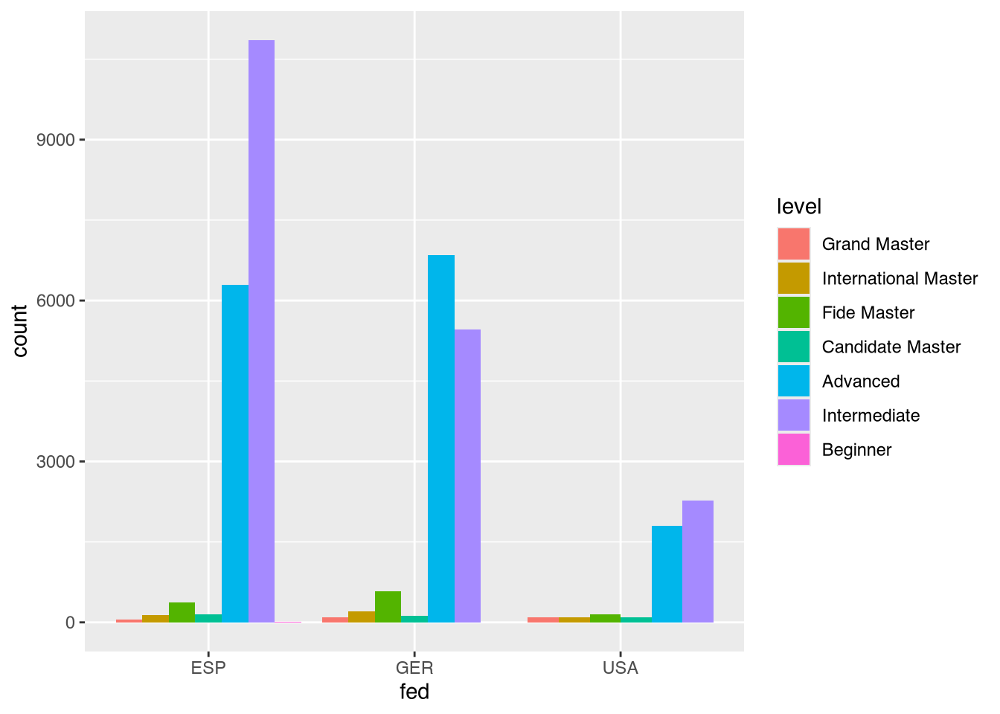
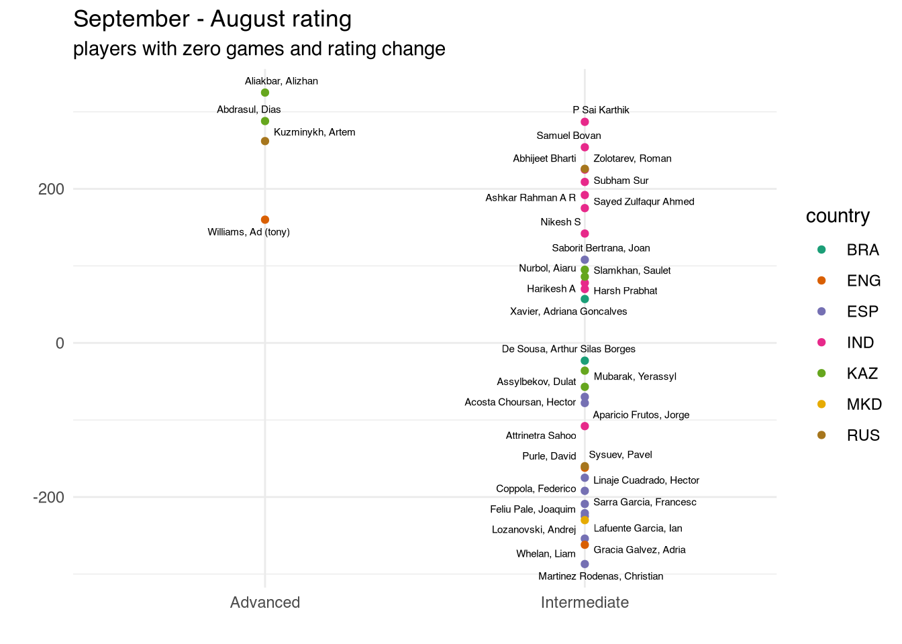

library(tidyverse) # ggplot, lubridate, dplyr, stringr, readr...
library(praise)
library(DT)
library(fontawesome)
fontawesome::fa_html_dependency()FIDE Chess Player Ratings
fide_ratings_august_OG <- read_csv("https://raw.githubusercontent.com/rfordatascience/tidytuesday/main/data/2025/2025-09-23/fide_ratings_august.csv")
fide_ratings_september_OG <- read_csv("https://raw.githubusercontent.com/rfordatascience/tidytuesday/main/data/2025/2025-09-23/fide_ratings_september.csv")fide_ratings_august <- fide_ratings_august_OG |>
#filter(games > 0) |>
mutate(level = case_when(title %in% c("GM", "WGM") | wtitle == "WGM" ~ "Grand Master",
title %in% c("IM", "WIM") | wtitle == "WIM" ~ "International Master",
title %in% c("FM", "WFM") | wtitle == "WFM" ~ "Fide Master",
title %in% c("CM", "WCM") | wtitle == "WCM" ~ "Candidate Master",
rating <= 1400 ~ "Beginner",
rating <= 1800 ~ "Intermediate",
TRUE ~ "Advanced")) |>
mutate(level = factor(level, levels = c("Grand Master", "International Master",
"Fide Master", "Candidate Master",
"Advanced", "Intermediate",
"Beginner")))fide_ratings_august |>
filter(fed %in% c("ESP", "GER", "USA")) |>
ggplot(aes(x = fed, fill = level)) +
geom_bar(position = "dodge")
Joining August & September
fide_ratings <- fide_ratings_august_OG |>
inner_join(fide_ratings_september_OG, by = "id") |>
mutate(level_aug = case_when(title.x %in% c("GM", "WGM") | wtitle.x == "WGM" ~ "Grand Master",
title.x %in% c("IM", "WIM") | wtitle.x == "WIM" ~ "International Master",
title.x %in% c("FM", "WFM") | wtitle.x == "WFM" ~ "Fide Master",
title.x %in% c("CM", "WCM") | wtitle.x == "WCM" ~ "Candidate Master",
rating.x <= 1400 ~ "Beginner",
rating.x <= 1800 ~ "Intermediate",
TRUE ~ "Advanced")) |>
mutate(level_aug = factor(level_aug, levels = c("Grand Master", "International Master",
"Fide Master", "Candidate Master",
"Advanced", "Intermediate",
"Beginner"))) |>
mutate(level_sep = case_when(title.y %in% c("GM", "WGM") | wtitle.y == "WGM" ~ "Grand Master",
title.y %in% c("IM", "WIM") | wtitle.y == "WIM" ~ "International Master",
title.y %in% c("FM", "WFM") | wtitle.y == "WFM" ~ "Fide Master",
title.y %in% c("CM", "WCM") | wtitle.y == "WCM" ~ "Candidate Master",
rating.y <= 1400 ~ "Beginner",
rating.y <= 1800 ~ "Intermediate",
TRUE ~ "Advanced")) |>
mutate(level_sep = factor(level_sep, levels = c("Grand Master", "International Master",
"Fide Master", "Candidate Master",
"Advanced", "Intermediate",
"Beginner"))) |>
mutate(rating_diff = rating.y - rating.x)Below are all the people who did not play any games in September or August, yet their rating across the two months changed. No idea why!
fide_ratings |>
filter(games.x == 0, games.y == 0, rating_diff != 0) |>
ggplot(aes(x = level_sep, y = rating_diff)) +
geom_point(aes(color = fed.x)) +
ggrepel::geom_text_repel(aes(label = name.x), size = 2) +
labs(y = "",
x = "",
color = "country",
title = "September - August rating",
subtitle = "players with zero games and rating change") +
scale_color_brewer(palette = "Dark2") +
theme_minimal()
Maybe the 35 peopel who changed (but didn’t play any games), actually did play some games, which weren’t recorded. Seems likely to be a recording error.
fide_ratings |>
filter(games.x == 0, games.y == 0) |>
mutate(rate0 = ifelse(rating_diff == 0 , "no change", "change")) |>
group_by(rate0) |>
summarize(n())# A tibble: 2 × 2
rate0 `n()`
<chr> <int>
1 change 35
2 no change 129924fide_ratings |>
slice_max(order_by = abs(rating_diff), n = 25) |>
select(name.x, rating.x, games.x, rating.y, games.y, title.x, title.y, rating_diff)# A tibble: 26 × 8
name.x rating.x games.x rating.y games.y title.x title.y rating_diff
<chr> <dbl> <dbl> <dbl> <dbl> <chr> <chr> <dbl>
1 Kulshrestha Ta… 1573 0 2242 9 <NA> <NA> 669
2 Montes Molina,… 2202 17 1573 0 <NA> <NA> -629
3 Gil Jimenez, D… 1970 4 1409 0 <NA> <NA> -561
4 Guru Darshan P 1409 5 1958 9 <NA> <NA> 549
5 Ayushman Biyala 1492 2 1901 0 <NA> <NA> 409
6 Dea Ruiz, Jofre 1901 9 1492 0 <NA> <NA> -409
7 Mussauly, Nura… 2115 15 1716 0 <NA> <NA> -399
8 Plotnikov, Ale… 1564 0 1960 8 <NA> <NA> 396
9 Schell, Finn 1956 7 1564 0 <NA> <NA> -392
10 Plzak, David 1488 0 1850 18 <NA> <NA> 362
# ℹ 16 more rowspraise()[1] "You are prime!"